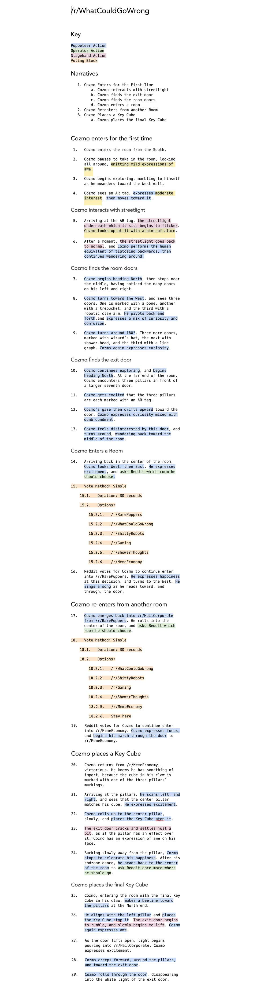
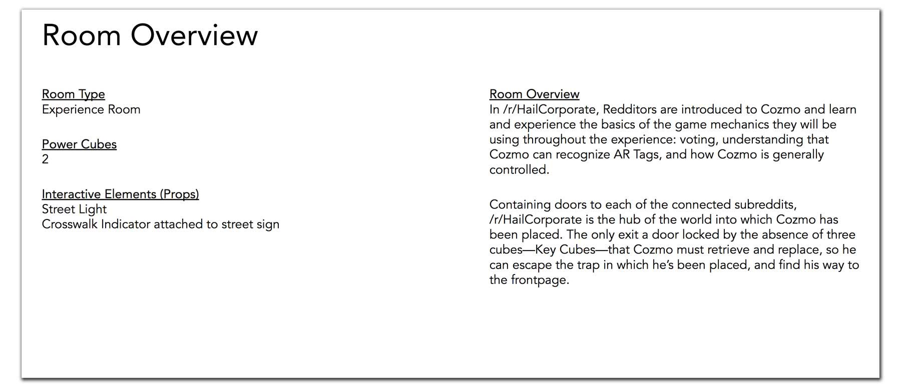
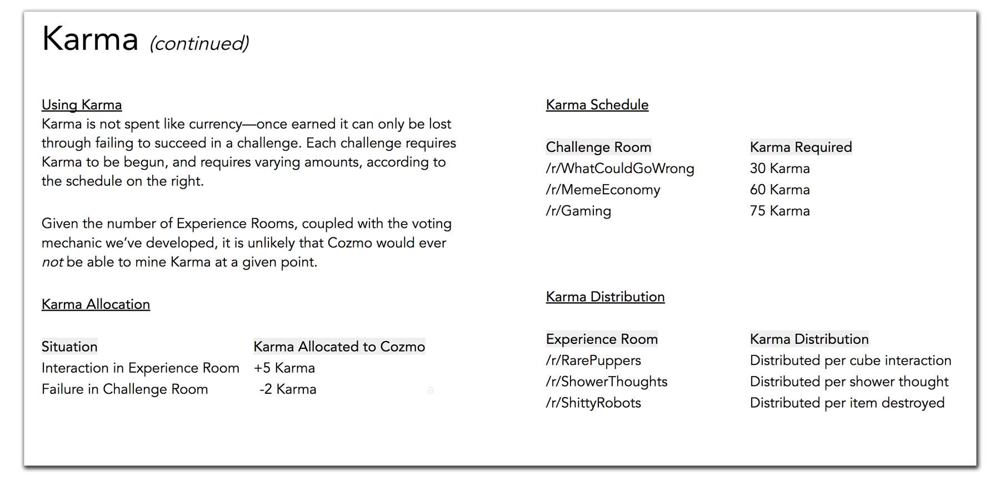

Lost in Reddit
What
Cozmo: Lost in Reddit—a physical escape-room game involving an artificially-intelligent robot
Role
Lead UX designer, game design and puppeteering. Tasked with leading multiple workstreams throughout project lifecycle, client communication, partnering with vendors, establishing overall game design for the escape room, and oversight of pupeteering mechanics for the game.
That's me on the left, piloting Cozmo during the event. My kickass partner Jenna stands next to me—she controlled Cozmo's emotional output.
I was fortunate enough to be able to help program the keyboard we used to trigger Cozmo's emotions, as well as the system that controlled him with a PS4 controller. The video above shows clips from the six-hour live stream, during which I piloted Cozmo, and my coworker puppeteered his emotional output.
Abstract
Before July 2017, I had had no formal experience in game design. All of that changed when I was approached with the concept for an escape-room game in which a little AI Robot, Cozmo, would find himself trapped in a physical manifestation of Reddit.
The initial problem was that, creatively, we had a great creative concept, but no formal idea or framework for how the game would actually work. I was initially cast as the lead UX designer on the project, and was charged with cracking the "how" of the game.
Cozmo: Lost in Reddit (as it would later be known) would go live, on Reddit, in 11 weeks.
Artifacts Produced
Interaction Maps
The game at-large, as well as each room had its own interaction map to detail the points of contact for Cozmo as well as to indicate the logical pathways he could/should follow during the live event.
Abstractions shown as color-filled shapes represent higher-order logic in the system that is accounted for in their own interaction maps.
The interaction flow map for the game's hub, /r/HailCorporate.
Room Narratives
For each room, we wrote annotated narratives that helped us understand some of the emotional context Cozmo would be experiencing as he navigated the escape rooms. These scripts also allowed us to consider points at which the audience would interact with Cozmo, and what his possible outcomes would be, considering the nature and psychology of the Reddit subculture.

The prototype room narrative/ux script for /r/HailCorporate.
Storyboard Narratives
We had a storyboard artist draw up frames to help guide the client team through each room, and the narratives for those storyboards derived from our larger-scale room narratives.
The result was a concise visual aid that allowed us to communicate to the client what they could expect to happen in each room, without requiring them to read 20 pages of material.
A storyboard representing Cozmo winning the game.
Game Mechanics Manifest
After many rounds of refinement, we ended up creating a game manifest that collected all of the common parts and pieces of the game that applied to each section. Points, karma, how Cozmo gained karma, how cubes were used, etc., all detailed in a cohesive document to serve as a reference and guiding point for the project team.


Codified mechanics details, as presented to team and client upon finalization.
Read more about Cozmo: Lost in Reddit here:
Fast Company
Tech Crunch